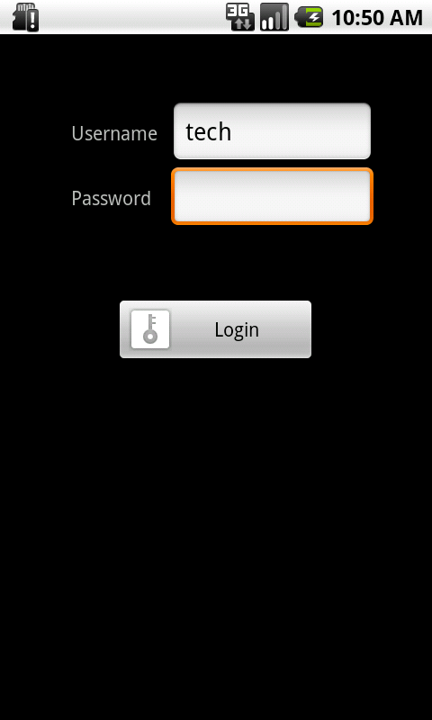
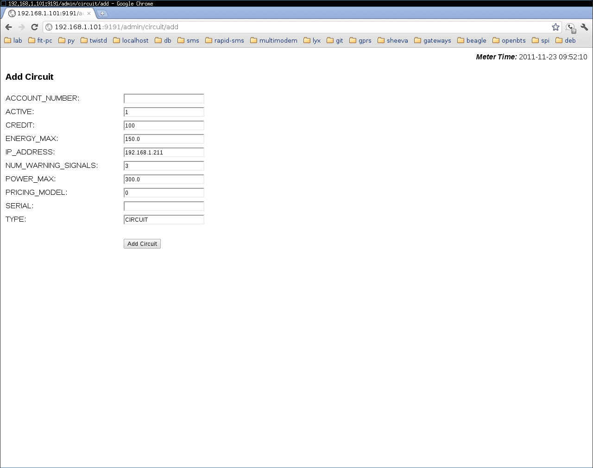

SharedSolar Metering Software: Setup/Configuration Guide¶
This section walks you through the various setup and tuning variables that can be configured from the Webmin. These are pre-requisites before commissioning the system and are meant to be performed in sequence listed below.
- Configure consumer accounts on the Gateway.
- Configure the Tristar MPPT-60 Solar System Controllers.
- Configure the Vendor Tablets.
- Start the ssmeter service.
- Configure the Meter.
- Configure the Pricing Models.
- Configure the Circuits.
A screenshot of the Webmin’s main-page is below. It’s setup (in code) to be accessed at http://192.168.1.101:9191/admin on the plug computer on which the SharedSolar software is running.
There are three sections on the Webmin:
- View - you can check the PCU logs and the modem’s logs.
- Send SMS - you can use this to test your modem’s ability to send text messages, in conjunction with the View for the SMS Logs.
- Configure - from here you can make both the high- and low-level settings needed for the overall service (Configure - Meter), the individual circuits (Configure - Circuits) and the individual pricing models (Configure - Pricing Models).

Configure consumer accounts on the Gateway.¶
Before setting up the Metering software on the plug-pc’s, one needs to setup the SharedSolar Gateway for use with the meters. Briefly, the steps to be followed are:
- Add a new Meter.
- Configure the new Meter.
- Add new consumer accounts for the Meter.
Once the Gateway has been setup, note down the consumer account ID’s and their corresponding circuits. This mapping between the two will be needed in subsequent steps when Circuits are being configured (discussed below.)
Configure the Tristar MPPT-60 Solar System Controllers.¶
The Tristar MPPT-60 Solar System Controllers communicate using Modbus over TCP. For the SharedSolar metering software to access these devices, we need to assign static IP’s for these devices. This can be done both on the Tristar, as well as on the wireless router. For current purposes, we shall use the wireless router to assign the static IP to the MPPT-60. You can do this by following the steps below in the sequence listed. These assume a Netgear wireless router is being used, but please make the necessary changes if you’re using a different product.
Note
These steps account for the case where a single MPPT-60 is involved. While you can have configurations with multiple MPPT-60’s, they will not be accessed by the Sharedsolar software. Please choose a single PCU that you’d like to receive the logs from. Future versions of the software will include support for multiple PCU’s, and this documentation will reflect the change, when implemented.
Visit the Netgear Wireless Router admin page at http://192.168.1.1
Under section ‘Advanced’, click on the link for ‘LAN Setup’.
The last section should be ‘Address Reservation’, and that’s where we’ll setup the Tristar. The screenshot below shows what you should see at the end of the setup.
Click on ‘Add’.
You should see the Tristar listed among other devices - it’ll have a device name like ‘TSMPPT...’. And three input fields at the bottom, labelled ‘IP Address’, ‘MAC Address’ and ‘Device Name’.
Enter 253 in the last ‘IP Address’ field. So, IP address should read 192.168.1.253.
Copy the MAC Address for the Tristar from the list above to the field ‘MAC Address’.
Copy the Device Name for the Tristar from the list above to the field ‘Device Name’.
Hit ‘Add’.
Restart Tristar.
Confirm settings by visiting http://192.168.1.253 . You should see the Tristar webpage.
Configure the Vendor Tablets.¶
Vendors can manage consumer accounts and add credit using a device running the SharedSolar Android app. Before the field-tech hands over the device to the Vendor, the following steps should be performed:
Register the device at the SharedSolar Gateway.
Assign a static IP for the device using the following steps:
- Go to the Wi-Fi advanced settings on the tablet:
- Push the menu button
- Touch Settings - Wireless & network settings - Wi-Fi settings
- Push the menu button
- Touch Advanced
- You’ll see the MAC address. (Or open SharedSolar app and see the about page. The device ID is the MAC address)
- In the wireless router admin page, click “LAN Setup” on the left panel. Click “Add” under “Address Reservation”.
- Input the following:
- IP address: 192.168.1.222
- MAC address: the MAC address you see on the tablet. Ignore dots.
- Device Name: tablet
- Click “Add” will take you to the previous page, and then click “Apply”. It’ll take 20 seconds to update.
- Disconnect and connect the tablet to the Wi-Fi.
- Go to the Wi-Fi advanced settings on the tablet:
Authorize the device with the meters the Vendor will be servicing. This is done by the field-tech at the Meter/site.
On the device, log onto the wireless network provided by the router at the site of interest.
Access the field-tech menu using the Home/Menu button on the device. Login.
Click on the button Sync Device. On success, the device will have been paired with the Meter and will be authorized for subsequent use.

{kind=link}
{kind=link}
Start the ssmeter service.¶
Once the above steps have been performed, it’s time to start the SheevaPlug and the software service ssmeter. Power up the plug, and ssmeter will be started automatically. Booting might take a minute or two, and check for the running of the ssmeter service by visiting the webmin at http://192.168.1.101:9191/admin.
Note
This assumes you’re on the same wireless network as that provided by the wireless router in the metering enclosure.
If you do not see the Webmin, check the ssmeter system logs that can be found at /tmp/ssmeter.log on the SheevaPlug. These logs are rotated with the most recent in /tmp/ssmeter.log and the oldest at /tmp/ssmeter.log.10 (there will be 10 archived logs each 1M in size.)
Configure the Meter.¶
The field technician can configure all aspects of the Meter by accessing Configure - Meter. From here, you can make general settings like the Gateway’s phone number and performance tuning parameters like the cache times and frequencies of various operations. Most of these are for working with the WattsUp SC20 electricity meters. Also included are some parameters for use in IP mode - GPRS/data plan.
To make any change, update the necessary fields and hit the Update Meter button at the bottom of the page.
The parameters that we can set from here and their descriptions are:
- CACHE_TIME: the amount of time (in seconds) that the meter will store logs in memory before writing out to the SD-card.
- FREQ_COMPONENT_FAILURE_CHECK: the frequency (in seconds) between logs from a circuit before it’s flagged as not functioning. When a circuit is flagged, it triggers an alert SMS to be sent to the Gateway.
- FREQ_GATEWAY_JOB_REQUEST: this is a parameter for use in IP mode. This is the frequency (in seconds) with which the Metering software will request for jobs from the Gateway. For eg: if it’s set at 10, then the Metering software will check for new Gateway jobs every 10 seconds.
- FREQ_PRIMARY_PARAMETER_TRANSMISSION: this is the frequency (in seconds) that the Metering software sends primary logs to the Gateway. For eg: setting it to 3600 will result in hourly log transmissions.
- GATEWAY: this is the local phone number that the Gateway is assigned to in the country. This is the number that the meter sends the logs and alert messages to, as well as the number validated at the Meter when it receives a text message - if the number does not match, then it’s considered unauthorized and discarded. Due to the varying number formats (leading 0, + etc), it’s best to only include the minimal set of characters (the phone number) required to send out a text message from a phone.
- GPS_LATITUDE: the location of the deployment - the GPS latitude (float).
- GPS_LONGITUDE: the location of the deployment - the GPS longitude (float).
- IP_ADDRESS: the IP address of the metering software to listen on. This is also the same IP that the SC20’s report on. Keep this at 192.168.1.101.
- LOGS_HOME: the home directory under which the SD-card log files will be written to. Current setup has this at - /mnt/ssmeter/logs/
- LOW_CREDIT_THRESHOLD: for each circuit/account, this is the credit level at/below which there will be an alert sent indicating the same.
- MODE: the communications mode. There are only two options - SMS and IP. Please leave at SMS till IP is confirmed as operational.
- NAME: the name of the deployment/site. This should match what was setup for this particular site on the Gateway.
- PERSIST_UPDATE_TIME: A local database with a minimal set of values are stored on the plug-pc. These typically include the credit associated with each circuit, the total watt-hours consumed that day etc - values that are necessary to be loaded on service restarts to bring it back to a consistent state. This value is the frequency (in seconds) that the database is updated.
- PPPD_PEER: this is a parameter for use in IP mode. It’s the pppd chat/handler scripts that the metering software accesses internally to help manage network connections. The value entered here should match the /etc/chatscripts/<your script here> filename (or its equivalent on other distro’s.)
The meter configuration page looks like:
Configure the Pricing Models.¶
Pricing Models can be developed, configured and applied per consumer circuit/account from the Webmin.
To make any change, update the necessary fields and hit the Update Model button at the bottom of the page.
The parameters that we can set from here and their descriptions are:
- BASELINE_RATE:
- DAY_MULT: for time-of-day pricing. Day time multiplier.
- ENERGY_HIGH_MULT: energy-consumption pricing. Multiplier used when consumption exceeds the threshold value set in ENERGY_THRESHOLD.
- ENERGY_LOW_MULT: energy-consumption pricing. Multiplier used when consumption is below the threshold value set in ENERGY_THRESHOLD.
- ENERGY_THRESHOLD: Used for energy-consumption pricing. Threshold (in watt-hours) between the low/high consumption values.
- MODELID: integer identifier for the pricing model. This is later cross-referenced when you’re setting up a Circuit and need to associate it with this pricing model.
- NAME: A human-readable name for this model.
- NIGHT_MULT: for time-of-day pricing. Night time multiplier.
- POWER_HIGH: used for power-level pricing. Threshold (in watts) for devices drawing a load higher than this value.
- POWER_HIGH_MULT: power-level pricing. Multiplier used when load exceeds the threshold value set in POWER_HIGH.
- POWER_LOW: used for power-level pricing. Threshold (in watts) for devices drawing a load higher than this value.
- POWER_LOW_MULT: power-level pricing. Multiplier used when load exceeds the threshold value set in POWER_LOW.
- POWER_MID_MULT: power-level pricing. Multiplier used when load drawn is in the range between POWER_LOW and POWER_HIGH.
- TIME_DAY_START: used for time-of-day pricing. The time in ‘HH:MM:SS’ format indicating the start of the day.
- TIME_NIGHT_START: used for time-of-day pricing. The time in ‘HH:MM:SS’ format indicating the start of night-time.
The equation to express the rate of energy credit utilization, during a given pricing state, is shown below:
a = b * c * (d_n * p_n * e_n)
where,
* a is the amount of energy credit spent in units of [CURRENCY],
* b is the baseline pricing value in units of [CURRENCY]/kWh ,
* c is the energy utilized in units of Watt-hours,
* d_n is the time of day multiplier as determined by the Pricing-Matrix,
* p_n is the power multiplier as determined by Pricing-Matrix, and
* e_n is the energy multiplier as determined by Pricing-Matrix.
Below are two examples of possible use scenarios further detailing pricing. These examples assume the following multiplier values: d1 = 1 , d2 = 1.5 , p1 = 1 , p2 = 1.5 , p3 = 2 , e1 = 1 , e2 = 1.5 , and a baseline pricing of b = 1 x [CURRENCY]/Wh .
Daytime low load, base pricing: A consumer used 80 watt hours between 9am and 11am, at a max loading of 40 watts. This then cost them 80 XOF of credit. (Note, they did not exceed the allowed 200 watt-hour base energy threshold.)
a = b * c * (d_n * p_n * e_n)
a = 1 * 80 * (1 * 1 * 1) = 80
Nighttime high load pricing: A consumer used a 600 watt hours between 7pm and 10pm, at a consistant loading of 200 watts. This then will cost 2400 XOF of energy-credit (for the first 200 watt-hours its baseline pricing x3, because there is a x2 multiplier for nighttime pricing plus a x2 multiplier for High load pricing which totals a x5 multiplier; multipliers are additive; during the second two hours of consumption there is an additional x1 multiplier because the consumer has exceeded the 200 watt-hour daily base-line limit).
a = b * c * (d_n * p_n * e_n)
a = [1 * 200 * (1.5 * 2 * 1)] + [1 * 400 * (1.5 * 2 * 1.5)] = 2400
The pricing model configuration page looks like:
Adding new Pricing Models.¶
The user interface (UI) presented to add a new pricing model mirrors that of the configuration UI.
The Webmin page to add a new pricing model is:
Configure the Circuits.¶
Individual circuits and account properties can be configured by the field technician from the Configure - Circuits - Circuit_ID link. There are two types of Circuits, and the differences are noted in the comment on TYPE below.
To make any change, update the necessary fields and hit the Update Circuit button at the bottom of the page.
The parameters that we can set from here and their descriptions are:
- ACCOUNT_NUMBER: This should match the consumer account number on the Gateway that this SC20 associated with.
- ACTIVE: Signifies whether the relay is ON/OFF. Valid values are 0 for OFF, and 1 for ON.
- CIRCUITID: The circuit ID, which is translated into an IP Address for the SC20’s in the range 192.168.1.2XX, where XX is the CIRCUITID.
- ENERGY_MAX: The energy (in watt-hours) available for the consumer.
- NUM_WARNING_SIGNALS: Defunct.
- POWER_MAX: The maximum load (in watts) that a consumer can draw at any given point in time.
- PRICING_MODEL: The ID (integer) of the pricing model in effect at this circuit. This must match one of the Pricing Models already setup.
- SERIAL: The serial number of the SC20. This is an optional field, but should not be left empty.
- TYPE: There are two valid values for this field - MAINS and CIRCUIT. The differences between a MAINS AND a CIRCUIT are:
- MAINS is typically on 192.168.1.200
- MAINS will not switch OFF if the ACTIVE field is set to 0.
- MAINS will not switch OFF if ENERGY_MAX and POWER_MAX are hit.
- The CREDIT value for MAINS is not used, as it’s not connected to a consumer.
- CREDIT: The credit balance on this account (float).
The circuit configuration page looks like:
Adding new Circuits.¶
The user interface (UI) presented to add a new circuit mirrors that of the configuration UI. The pre-requisite is to create an account on the Gateway so that you can enter that value when you’re creating the new circuit.
The Webmin page to add a new circuit is:
